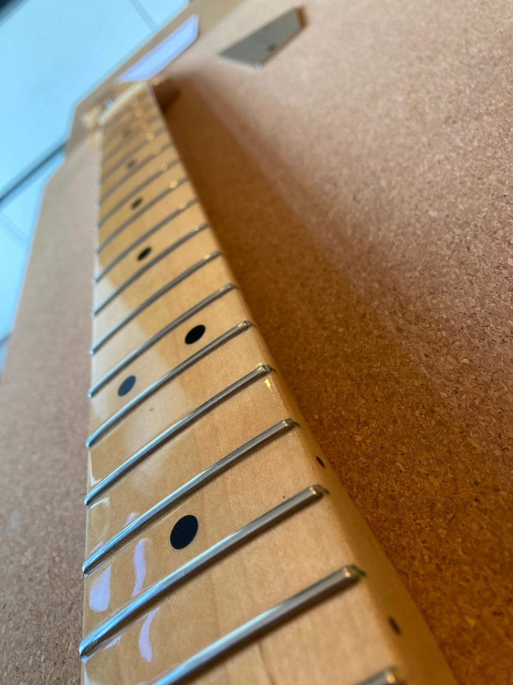

Fretwerk
Voorbeeld van het vlakken, crownen en polijsten van frets.
Deze Fender Stratocaster had na jaren spelen duidelijk versleten frets. De vraag was of een complete refret nodig was, maar dat bleek niet het geval. De slijtage was niet diep genoeg om alle frets te vervangen, daarom is gekozen voor een fret leveling. Bij een fret leveling worden alle frets zorgvuldig gevlakt, zodat slijtplekken verdwijnen en het volledige fretoppervlak weer egaal wordt. Vervolgens zijn de frets gecrowned (afgerond) en daarna gepolijst, waarna de hals weer als nieuw is. Als je dan voorraadje kleurrijke washi tape hebt om de toets te beschermen, is dat prima en best vrolijk.


